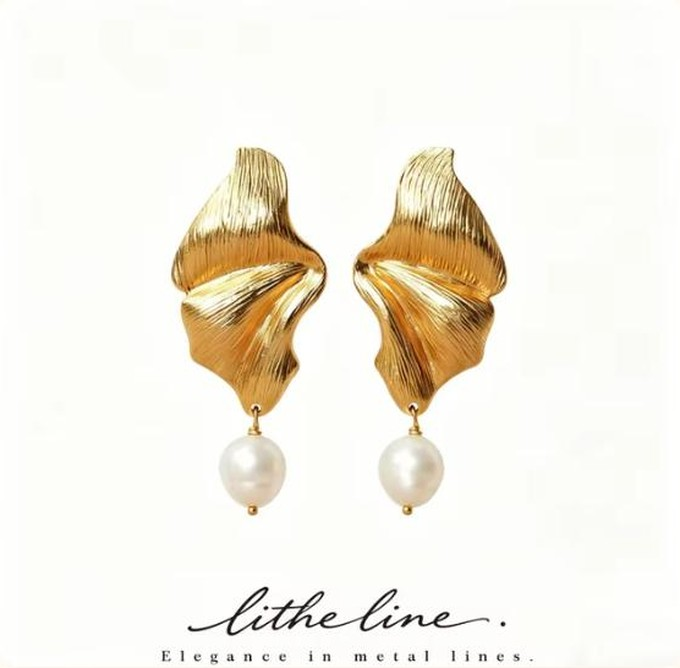

Pearl jewelry for every day: soft, modern and elegant
Disclosure: this page contains Amazon affiliate links. As an Amazon Associate I earn from qualifying purchases, at no extra cost to you.
Pearls are not only for weddings or your grandmother's jewelry box. Small pearls on fine gold give a soft glow that looks fresh with a sweater, a white shirt or a little black dress. One or two pieces are enough to make any outfit feel more elegant.
1. Pearl pieces that go with everything
- Pearl studs: the easiest start. Small, classic and right for work, dinner or every day.
- Pearl drop earrings: a pearl hanging from a gold hoop or chain. A little movement, very feminine.
- A single pearl pendant: one pearl on a thin gold chain. Quiet, modern and easy to layer.
- A pearl and gold bracelet: a few pearls on a fine chain, lovely next to a watch.
Shop pearl stud earrings on Amazon
2. How to wear pearls the modern way
Mix pearls with gold instead of wearing a full pearl set. Try pearl studs with a fine gold chain, or a pearl pendant layered with a plain gold necklace. Keep the rest simple: neutral colors like cream, camel, brown and black let the pearls shine.

For a soft evening look, choose drop earrings and leave the neck bare, or wear a pendant with small studs.
Shop dainty pearl necklaces on Amazon
3. Real, freshwater or faux?
Read the product details to see what kind of pearls you are buying. Freshwater pearls are real pearls and often have a slightly uneven, natural shape. Faux (shell or glass) pearls are perfectly round and usually cost less. Both can look beautiful; choose what fits your budget and how often you will wear them.
4. Check before you buy
- Size: small pearls (around 6–8 mm) look best for every day; larger pearls feel more dressy.
- Metal: gold-plated sterling silver or stainless steel usually lasts longer than plated alloy.
- Sensitive skin: look for "nickel-free" or "hypoallergenic" in the description.
- Reviews and returns: buyer photos show the real color and shine better than studio shots.
Keep them glowing
Put pearls on last, after perfume, hairspray and lotion. Wipe them with a soft dry cloth after wearing, and store them flat in a soft pouch, away from harder jewelry that can scratch them.
Shop by style
More ideas to compare on Amazon:
- Freshwater pearl studs
- Pearl drop hoops
- Single pearl pendants
- Dainty pearl bracelets
- Baroque pearl necklaces
- Pearl hair clips
- Pearl jewelry gift sets